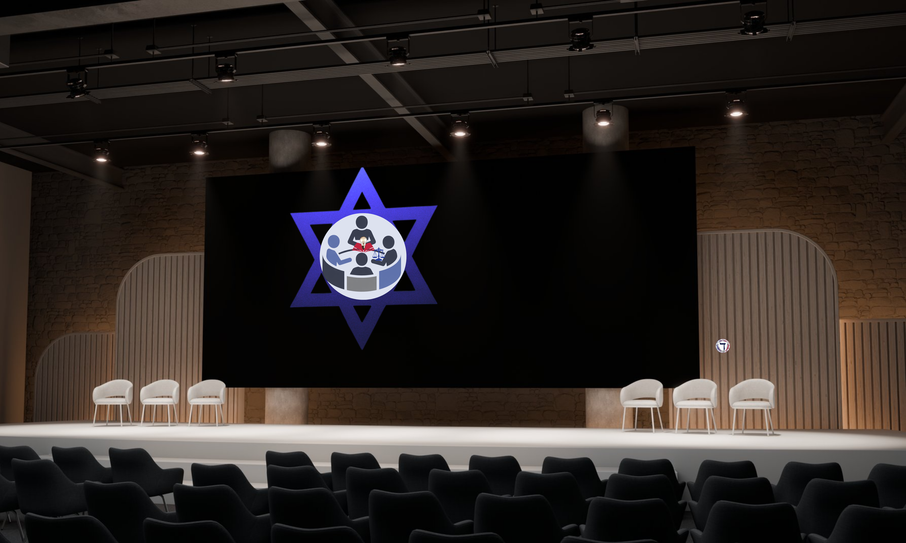
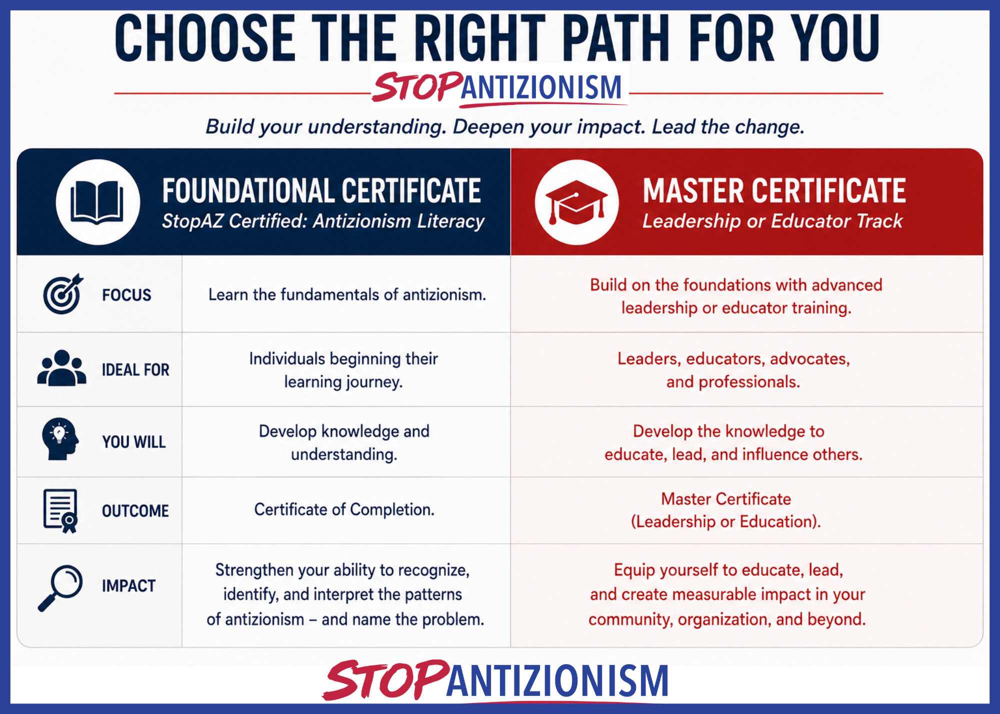
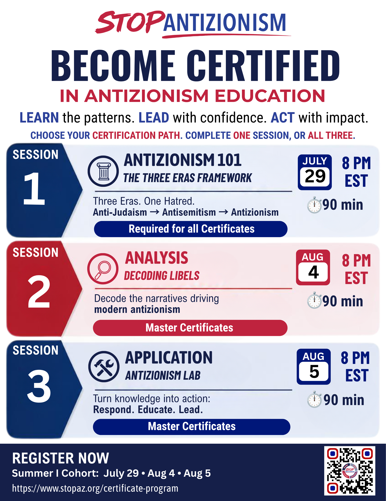
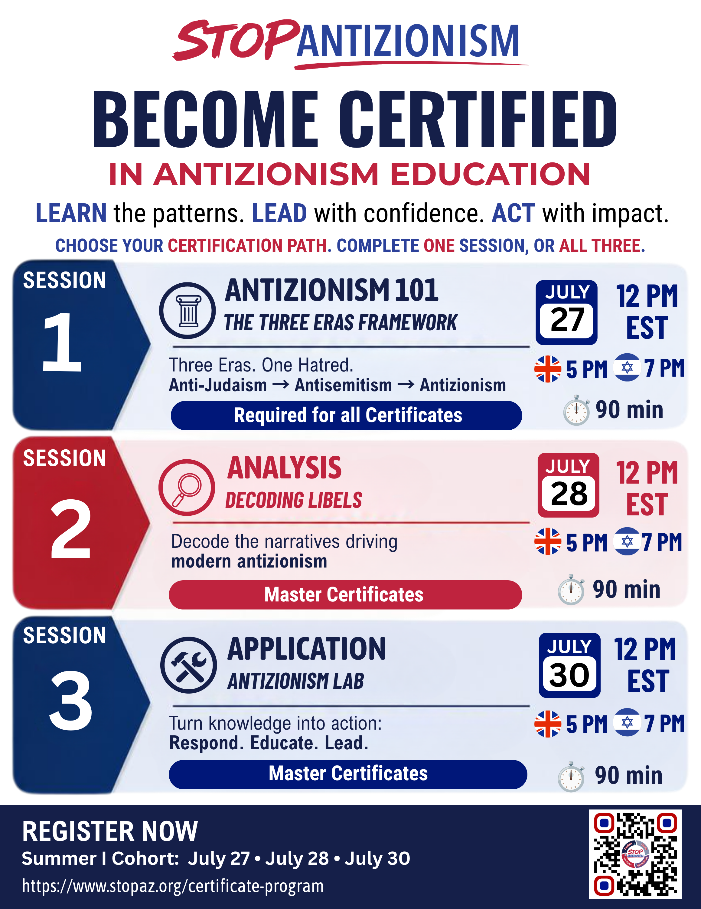

STOP ANTIZIONISM UPCOMING EVENTS
STOP ANTIZIONISM
UPCOMING EVENTS
Historic. Urgent. Transformative.
Historic. Urgent. Transformative.

Upcoming Events
Upcoming Events
Upcoming Events
We will be sharing our upcoming events below. If you are interested in partnering for an event, or having us showcase an event please contact us today.
Contact Us
📍 Stop Antizionism
Introducing the World's FIRST Professional Master Certification Program on Antizionism
Summer | Cohort
The fight against antizionism will not be won by slogans—it will be won through knowledge.
The StopAZ Certification Program equips individuals, educators, and leaders with the knowledge, frameworks, and practical tools to understand, confront, and lead the response to antizionism.
THREE TRACKS. ONE MISSION.
Session 1: Antizionism Literacy Certificate - FREE
1 session @ 90 min: Antizionism 101
🗓 Wednesday , July 29 | 🕢 8 PM EST
📍 Webinar
The Three Eras Framework.
- Three Eras. One Hatred. Anti-Judaism, Antisemitism, Antizionism.
- Required for all certificates
Session 2: Masters Certificates for Leader or Educator - $180, including all three sessions

1 session @ 90 min: Analysis - Decoding Libels
🗓 Tuesday , August 4 | 🕢 8 PM EST
📍 Webinar
Decode the libels driving modern antizionism and demonize Jews & Israel.
Session 3: Masters Certificates for Leader or Educator - $180, including all three sessions
1 session @ 90 min: Application - Antizionism Lab.
🗓 Wednesday , August 5 | 🕢 8 PM EST
📍 Webinar
Turn knowledge into action: Respond. Educate. Lead.
NEW TIME ADDED FOR UK, EUROPE & ISRAEL

UPCOMING DATES: July 27 - July 30, @ 12 PM EST
United Kingdon: 5 PM | Israel: 7 PM
3 sessions @ 90 min each session
- Antizionism 101 - The Three Era Framework: July 27 @ 12 PM EST
- Analysis Decoding Libels: July 28 @ 12 PM EST
- Application Antizionism Lab: July 30 @ 12 PM EST
About StopAZ
Stop Antizionism (StopAZ) is a global educational initiative advancing research, education, leadership development, and public awareness about modern antizionism and contemporary Jew-hatred. Through rigorous scholarship, innovative educational programs, and practical leadership training, StopAZ empowers individuals and institutions to recognize harmful narratives, confront misinformation, and build resilient communities.
Every purchase helps support StopAZ's mission to advance research, education, leadership development, and public awareness about modern antizionism and contemporary Jew-hatred. Together, we change culture.